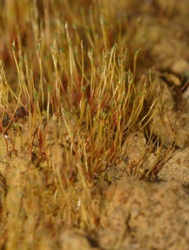

Disceliaceae
Flag Moss Family
Disceliaceae is a monotypic family (containing only Discelium nudum) known for its highly ephemeral gametophytes and conspicuous sporophytes. It features tiny, bud-like gametophytes arising from persistent protonema, and distinctive, nearly spherical capsules borne on long, thick, fleshy setae. It typically colonizes disturbed, acidic clay soils.
Overview
The Disceliaceae family, represented by the single species Discelium nudum, is a fascinating example of life cycle adaptation in mosses. It is characterized by a dramatic imbalance between the gametophyte and sporophyte generations. The gametophyte (the leafy green plant) is extremely reduced, often consisting of just a few tiny leaves on a bud-like shoot that develops from an extensive, persistent protonemal mat (a network of filaments). These gametophytes are ephemeral, often disappearing shortly after fertilization.
In stark contrast, the sporophyte is large and conspicuous, featuring a long, thick, fleshy seta that elevates a nearly spherical capsule well above the substrate. This moss is a colonist of specific habitats: bare, acidic, often moist clay soils, such as those found on disturbed banks, ditches, or lake margins. Its appearance can be sporadic, sometimes forming extensive populations of sporophytes in one year and seemingly vanishing the next, persisting only as protonema and spores in the soil.
Taxonomically, Disceliaceae is placed within the order Funariales, which includes other mosses with specialized life histories and capsule structures. Studying Discelium nudum provides insights into adaptations for colonizing disturbed environments and the diversity of bryophyte life cycles.
Quick Facts
- Scientific Name: Disceliaceae
- Common Name: Flag Moss Family
- Number of Genera: 1 (Discelium)
- Number of Species: 1 (Discelium nudum)
- Distribution: Scattered across temperate regions of the Northern Hemisphere (Europe, North America, Asia).
- Evolutionary Group: Bryophytes - Bryopsida (True Mosses) - Funariales
Key Characteristics
Disceliaceae exhibits a unique combination of reduced gametophytic features and prominent sporophytic features.
Gametophyte Form and Habit
The gametophyte generation is highly reduced and ephemeral:
- Protonema: Extensive, persistent, forming brownish or greenish mats on the soil surface, often the most visible part of the gametophyte stage.
- Vegetative Shoots: Extremely small, bud-like, arising from the protonema, bearing only a few leaves. Often ephemeral and difficult to find, especially when sporophytes are absent.
- Perichaetial Leaves: Leaves surrounding the archegonia are slightly larger than vegetative leaves but still very small and inconspicuous compared to the sporophyte.
- Male Plants: Also minute and bud-like, arising from the protonema. The species is dioicous (separate male and female plants).
Leaves (Phyllids)
Leaves are simple and very small:
- Structure: Broadly ovate to oblong, typically concave.
- Costa (Midrib): Absent (ecostate) or very short and faint.
- Cells: Relatively large, lax, smooth, hexagonal to rectangular.
Reproductive Structures
- Archegonia (female organs) are borne terminally on the minute female shoots.
- Antheridia (male organs) are borne terminally on the minute male shoots.
Sporophyte
The sporophyte (diploid generation) is large, conspicuous, and the most identifiable feature:
- Seta: Relatively long (often 1-2 cm), thick, fleshy, smooth, often yellowish to reddish-brown. Contrasts sharply with the tiny gametophyte.
- Capsule: Erect, nearly globose (spherical) when mature, becoming wider-mouthed and urn-shaped after dehiscence. Brownish in colour.
- Operculum: Large, conical with a short, pointed tip (apiculate). Falls away to reveal the capsule mouth.
- Peristome: Usually absent or extremely rudimentary, consisting of just 16 low, irregular teeth or projections that are often hidden below the capsule rim. This lack of a well-developed peristome is characteristic.
Spores
Spores are relatively large, spherical, and distinctly papillose (covered in small bumps).
Chemical Characteristics
No specific chemical characteristics are widely noted beyond those typical for Bryopsida mosses.
Field Identification
Identifying Disceliaceae relies almost entirely on spotting the distinctive sporophytes in their specific habitat, as the gametophytes are practically invisible.
Primary Identification Features (Hand Lens Level)
- Sporophyte Appearance: Look for populations of nearly spherical, brownish capsules held erect on long (1-2 cm), thick, fleshy, often reddish setae.
- Habitat: Crucial for identification. Found almost exclusively on bare, disturbed, acidic clay soils – road banks, ditch edges, lake shores, soil slumps.
- Apparent Absence of Gametophyte: The capsules appear to arise directly from the bare soil or a brownish film (the protonema). The leafy gametophyte is usually not visible without very close inspection or magnification.
- Capsule Mouth (Post-Dehiscence): After the lid falls, the capsule mouth is wide and lacks a prominent peristome.
Secondary Identification Features
- Protonemal Mat: A persistent brownish or dark green film may be visible on the soil surface from which the setae arise.
- Seasonality: Sporophytes typically mature and are most visible in late winter or spring. The moss may be absent or only present as protonema at other times.
Seasonal Identification Tips
- Late Winter / Spring: Best time to search. Look for the maturing capsules on their long setae in appropriate habitats.
- Summer / Autumn / Early Winter: The moss is likely present only as protonema or spores in the soil and will be extremely difficult or impossible to find.
Common Confusion Points
While distinctive, confusion can arise with other small mosses found on soil:
- Funariaceae (e.g., Funaria, Entosthodon): Some species grow on soil and have long setae, but their capsules are typically pear-shaped (pyriform) or ovate, often inclined or nodding, and possess well-developed, complex peristomes.
- Buxbaumiaceae (e.g., Buxbaumia): Also have reduced gametophytes and large capsules on setae, but the capsules are strongly asymmetrical, flattened, and shaped differently. Habitat often includes decaying wood or humus.
- Pottiaceae (e.g., Pottia, Phascum): Many small soil-colonizing species, but capsules are typically ovate or cylindrical, often with well-developed peristomes or remaining closed (cleistocarpous). Setae are usually thinner.
- Archidiaceae (e.g., Archidium): Have large spores and sessile capsules, lacking a seta entirely.
Field Guide Quick Reference
Look For:
- Globose (spherical) capsules
- Long, thick, fleshy seta
- Capsules appearing to rise from bare soil
- Habitat: Disturbed acidic clay banks
- Rudimentary or absent peristome
- Ephemeral/invisible gametophytes
Key Distinctions:
- vs. Funariaceae: Capsule shape (globose vs. pyriform), peristome (absent/rudimentary vs. complex).
- vs. Buxbaumiaceae: Capsule shape (globose vs. asymmetrical/flattened).
- vs. Pottiaceae: Capsule shape, peristome presence, seta thickness.
Notable Examples
The family Disceliaceae contains only one species.

Discelium nudum
(Flag Moss)
The sole representative of the family. It perfectly embodies the family traits: ephemeral, minute gametophytes on persistent protonema, giving rise to conspicuous sporophytes with long, fleshy setae and globose capsules lacking a functional peristome. Its presence is tightly linked to disturbed acidic clay substrates in temperate regions.
Phylogeny and Classification
Disceliaceae is classified within the class Bryopsida and is consistently placed within the order Funariales based on both morphological and molecular data. This order includes several families of mosses that often exhibit adaptations to ephemeral habitats or possess specialized sporophyte features.
Within the Funariales, Disceliaceae represents a distinct lineage characterized by its extreme gametophyte reduction and unique combination of sporophyte traits (globose capsule, long fleshy seta, reduced peristome). Its relationship to other families within the order, such as Funariaceae and Gigaspermaceae, is supported by molecular studies, highlighting shared ancestry despite significant morphological divergence.
Position in Plant Phylogeny
- Kingdom: Plantae
- Clade: Embryophyta (Land Plants)
- Division: Bryophyta (Mosses)
- Class: Bryopsida
- Order: Funariales
- Family: Disceliaceae
Evolutionary Significance
Disceliaceae, despite being monotypic, offers significant evolutionary insights:
- Life History Specialization: Exemplifies adaptation to ephemeral, disturbed habitats through protonemal persistence and rapid sporophyte production.
- Gametophyte-Sporophyte Relationship: Shows an extreme case of gametophyte reduction relative to sporophyte dominance in the visible life cycle.
- Peristome Reduction: Contributes to understanding the evolutionary loss or modification of the peristome, a key structure in moss spore dispersal.
- Phylogenetic Marker: Its stable placement within Funariales helps anchor phylogenetic reconstructions of this group of mosses.